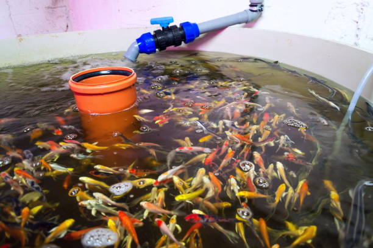

Whether you are starting your aquaponics unit at home, developing a large-scale aquaponics project, or championing small-scale aquaponic units in the classroom, here are seven rules to follow:
1. Choose the tank carefully. Fish tanks are a crucial component in every aquaponic unit. Any fish tank will work, but round tanks with flat or conical bottoms are recommended because they are easier to keep clean. Remember: Try using strong inert plastic or fibreglass tanks, because of their durability and long life span.
2. Ensure adequate aeration and water circulation. This means you should use water and air pumps to make sure that the water has high levels of dissolved oxygen and good water movement so that your animals, bacteria and plants are healthy. Remember: Electricity costs are a significant portion of the system budget so choose the pumps and power source wisely, and consider photovoltaic power, if possible.
3. Maintain good water quality. Water is the life-blood of an aquaponic system. It is the medium through which all essential nutrients are transported to the plants, and it is where the fish live. Five key water quality parameters are important to monitor and control: dissolved oxygen (5 mg/litre), pH (6–7), temperature (18–30 °C), total nitrogen, and water alkalinity. Remember: The water chemistry may seem complicated, but the actual management is relatively simple with the help of common test kits.
4. Do not overcrowd the tanks. Your aquaponic system will be easier to manage and will be insulated against shocks and collapse if the stocking density is kept low. The recommended stocking density is 20 kg/1 000 litres, which will still allow for substantial plant growing area. Remember: Higher stocking densities can produce more food in the same space, but will require much more active management.
5. Avoid overfeeding, and remove any uneaten food. Wastes and uneaten food are very harmful for aquatic animals because they can rot inside the system. Rotting food can cause disease and can use up all of the dissolved oxygen. Remember: Feed the animals every day, but remove any uneaten food after 30 minutes and adjust the next day’s portion accordingly.
6. Choose and space the plants wisely. Plant vegetables with short grow-out periods (salad greens) between plants with longer-term crops (eggplant). Continued replanting of tender vegetables such as lettuce in between large fruiting plants provides naturally shaded conditions. Remember: In general, leafy green plants do extremely well in aquaponics along with some of the most popular fruiting vegetables, including tomatoes, cucumbers and peppers.
7. Maintain balance between plants and animals. Using a batch cropping system can help keep a steady harvest of both aquatic animals and vegetables to keep a consistent production level and maintain a constant balance between fish and plants. Remember: A secure source of young plants and young fish is important, so make sure that the supply is considered during the planning phase.